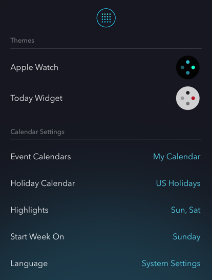

Please confirm the following so that calendar event datas can be read.
Open Coyomi app on iPhone, and check calendar's settings.

Turn on to iPhone's Settings > Privacy > Calendars > Coyomi.
Open Apple's "Calendar" app and check calendar's events exists.
Please set the calendar so that the event is displayed in the "Calendar" app.
The Apple Watch app connect with the iPhone app and updates datas of settings or calendar.
Please set up to Apple Watch can communicate with iPhone.
（Updated information is cached within Apple Watch）
If it is not fixed above, please try restarting Apple Watch and iPhone.